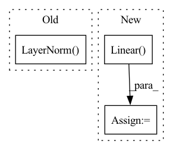

Pattern ID :937
Before Change
encoder_layer = nn.TransformerEncoderLayer(d_model=hidden_dim, nhead=nheads)
self.transformer = nn.TransformerEncoder(encoder_layer, num_encoder_layers)
self.mlp_head = nn.Sequential(
nn.LayerNorm( hidden_dim*64) ,
nn.Linear(hidden_dim*64, hidden_dim*32),
nn.LayerNorm(hidden_dim * 32),
nn.Linear(hidden_dim * 32, num_classes)After Change
)
self.dropout = nn.Dropout(dropout)
self.classifier = nn.Linear( mlp_head_dims[1], num_classes)
def forward(self, inputs):
x = self.signal_encoder(inputs)
In pattern: SUPERPATTERN
Frequency: 3
Non-data size: 3
Instances Fragment ID: 4479308
Project Name: kolaszko/haptic_transformer
Commit Name: aed59ae5263f8f3490b9ead581d7b112589a9f27
Time: 2021-03-02
Author: mikolaj.lysakowski.bk@gmail.com
File Name: models/haptr.py
M Class Name: HAPTR
N Class Name: HAPTR
M Method Name: __init__(8)
N Method Name: __init__(5)
M Parent Class: nn.Module
N Parent Class: nn.Module
M File Name: models/haptr.py
N File Name: models/haptr.py
M Start Line: 12
M End Line: 22
N Start Line: 7
N End Line: 28
Before Change
)
// transform residual for flattened_grn
self.residual_norm = nn.LayerNorm( self.num_inputs)
self.single_variable_grns = nn.ModuleDict()
for name, input_size in self.input_sizes.items():
if name in single_variable_grns:After Change
if name in prescalers:
self.prescalers[name] = prescalers[name]
else:
self.prescalers[name] = nn.Linear( 1, input_size) // reals need to be first scaled up
self.single_variable_grns[name] = GatedResidualNetwork(
input_size,
self.hidden_size, // alternative: min(input_size, self.hidden_size), Fragment ID: 4479306
Project Name: jdb78/pytorch-forecasting
Commit Name: 4b0e3005131eafedd8fe0d16081984f90c284a62
Time: 2020-08-12
Author: beitner.jan@bcg.com
File Name: pytorch_forecasting/models/temporal_fusion_transformer/sub_modules.py
M Class Name: VariableSelectionNetwork
N Class Name: VariableSelectionNetwork
M Method Name: __init__(8)
N Method Name: __init__(7)
M Parent Class: nn.Module
N Parent Class: nn.Module
M File Name: pytorch_forecasting/models/temporal_fusion_transformer/sub_modules.py
N File Name: pytorch_forecasting/models/temporal_fusion_transformer/sub_modules.py
M Start Line: 261
M End Line: 297
N Start Line: 281
N End Line: 334
Before Change
self.encoder_layers.append(nn.ModuleList([
FrequencyAttention(K = K, dropout = dropout),
MHESA(dim = model_dim, dim_head = dim_head, heads = heads, dropout = dropout),
nn.LayerNorm( model_dim) ,
FeedForwardBlock(dim = model_dim) if not is_last_layer else None,
Level(time_features = time_features, model_dim = model_dim)
]))After Change
self.growth_dampening_module = GrowthDampening(dim = model_dim, heads = heads)
self.latents_to_time_features = nn.Linear( model_dim, time_features)
self.level_stack = LevelStack()
def forward(self, x, *, num_steps_forecast):
z = self.embed(x) Fragment ID: 4479307
Project Name: lucidrains/etsformer-pytorch
Commit Name: 4dad061c0b0b6fc6d2515d00d6e0519a8dd384d4
Time: 2022-03-14
Author: lucidrains@gmail.com
File Name: etsformer_pytorch/etsformer_pytorch.py
M Class Name: ETSFormer
N Class Name: ETSFormer
M Method Name: __init__(1)
N Method Name: __init__(1)
M Parent Class: nn.Module
N Parent Class: nn.Module
M File Name: etsformer_pytorch/etsformer_pytorch.py
N File Name: etsformer_pytorch/etsformer_pytorch.py
M Start Line: 259
M End Line: 259
N Start Line: 273
N End Line: 290